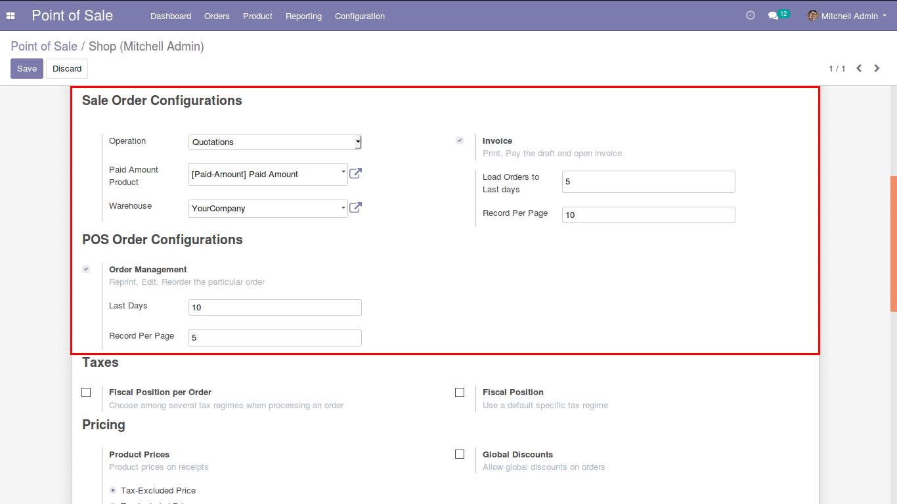
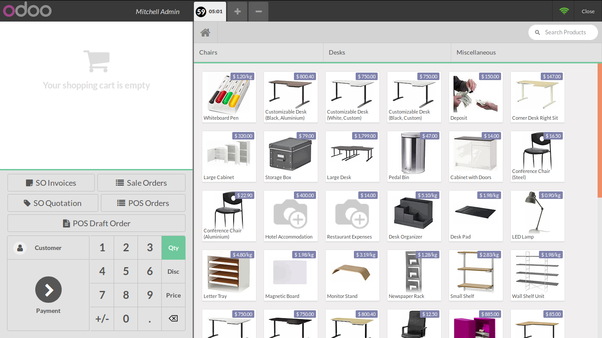
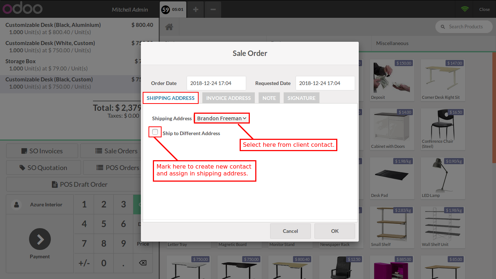
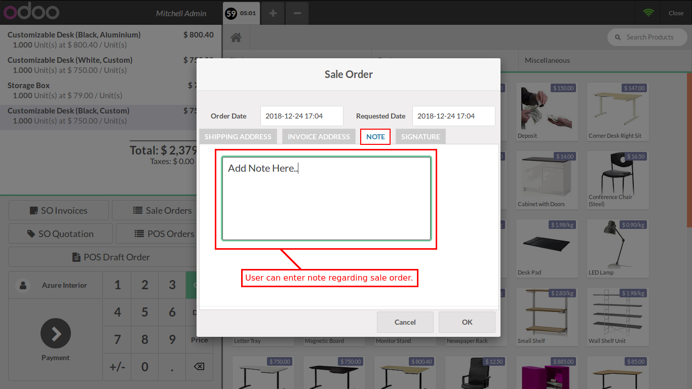
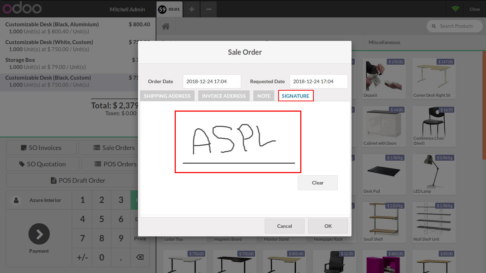
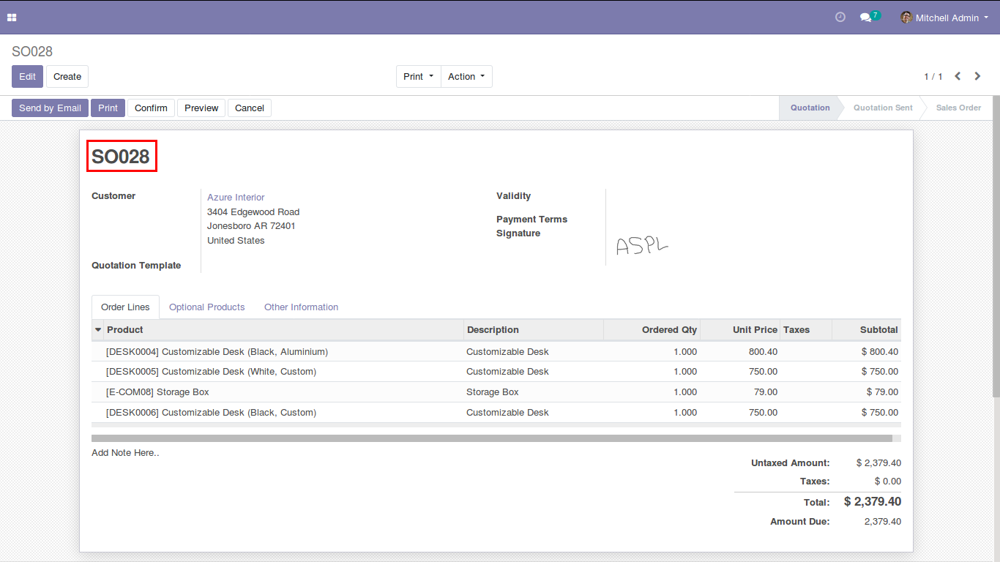
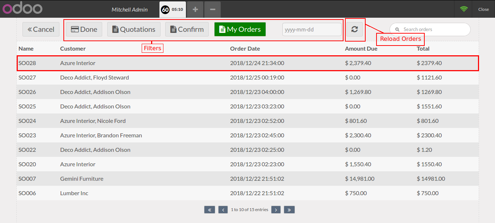
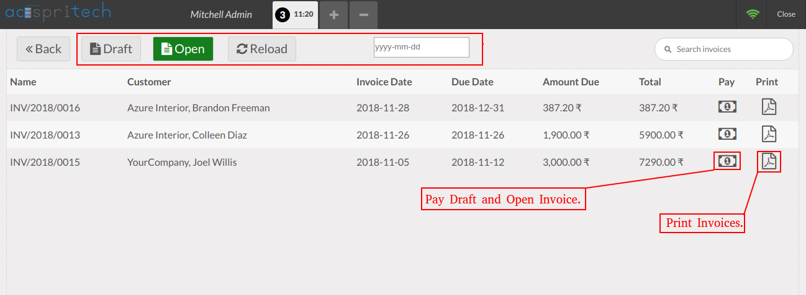
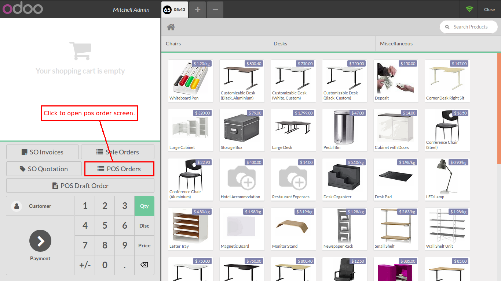
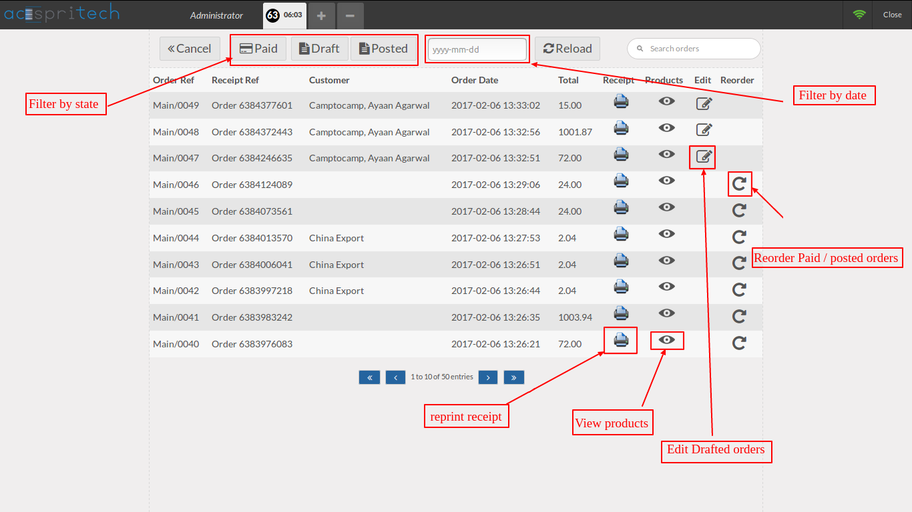

Manage pos order and sales order from Point of Sale with Extended Features
Note: This module is tested and working in Odoo community edition but not tested in Enterprise version. And we are supporting Ubuntu OS and not Windows OS.
- Create Sale order from POS(Quotations, Confirm, Paid)
- Partial Payment of Sale order
- Edit Quotations
- Add shipping address,invoice address,sale order note and signature
- Filter sale orders by it's state
- User can search and return the sale order
- Sale order manage by warehouse
- User can show only own sales order or all orders based on user rights
- To display all open sales invoices, and manage that invoice like pay and print
POS Order
- Create Draft(Unpaid) Order from POS
- View POS Order History
- Filters on Order History
- Reprint Any POS Order Receipt
- View Items of POS Order
- Edit Unpaid Order
- Reorder of specific order
How to use
Configuration to perform pos order and sale order operation from POS & Load order of last N number of days.

Restrict to show the other users sale orders.
Click on "SO Invoices" to see all draft and open sale order invoices.
Click on "Sale Orders" to see Sale orders.
To create Sale quotation from pos and View past sale orders, "SO Quotation" button appears as per the POS configuration.
Click "POS Orders" to see all pos orders.
Click "POS Draft Order" to create draft pos order.

This popup appears when user creating sale order, either sale order operation is Quotations or Confirm or paid.
Change order date, add shipping address or create new one.

Add invoice address or create new one.
Set note for Sale order.

Sign for Sale order.

Direct link to view latest created sale order.

Sale orders list.
User can edit Quotations, Partial or full pay of Quotations or Confirm order.

User can return sale order fully or partially.
Invoices list.
User can pay and print open invoices.

Click on "POS order" to see the list of past pos orders in tabular format.

On this orders table you can do filtration, re-print receipt, manually reload orders,re-order the order, view products of order as given in the below image.

Here is the product popup that contains list of products of particular order.
Whenever you click on product icon it will show order details. You can also re-order from this popup.
NOTE: We give 60 days support for our customers. Before trying in your live db, please ask us to provide you for test link. If any other custom modules are installed and because of that some errors occurs then we charge extra.